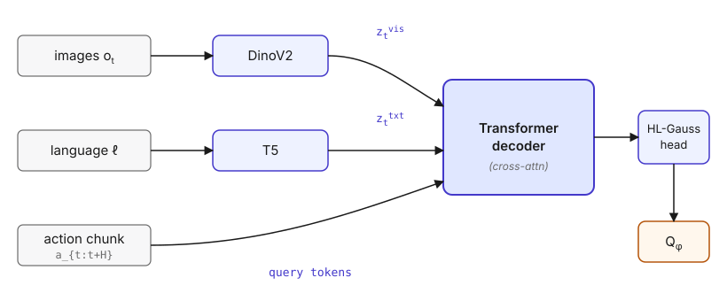
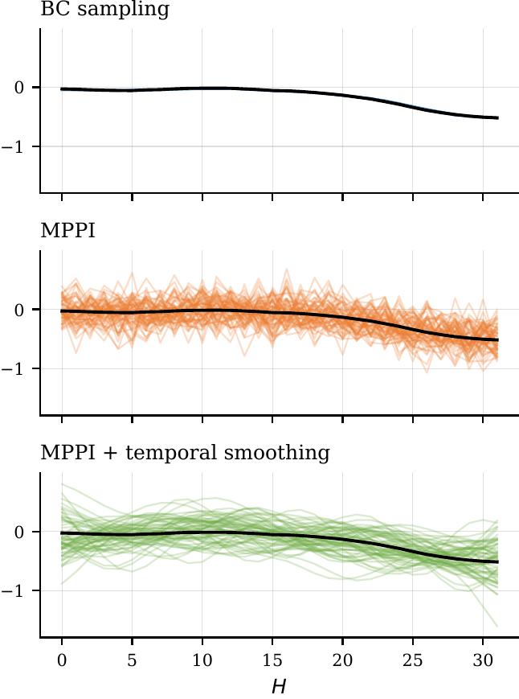
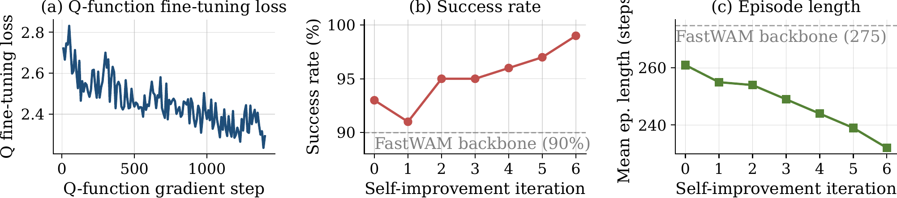
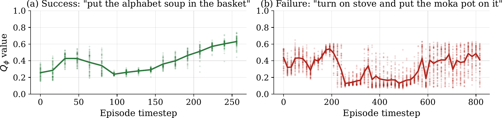

Beyond Imitation:
Self-Improving Robot Policies via Off-Policy Q-Planning
Under review at CoRL 2026

Abstract
Behaviour Cloning (BC) has driven remarkable progress in robot manipulation, yet it is fundamentally limited by its inability to self-improve: a policy that fails cannot learn from that failure without additional human demonstrations. Reinforcement Learning offers a path to self-improvement but has proven difficult to scale to the multi-billion-parameter models underpinning modern robot policies. We propose Q-Planning, which equips a large visuomotor BC policy with a small off-policy Q-function. Q-learning is not restricted to successful demonstrations the way BC is, so the same Q-function can be trained on demos and later absorb both successful and failed deployment rollouts without ever imitating them. We exploit this asymmetry to enable value-guided action selection at inference and online self-improvement that fine-tunes only the Q-function, without ever updating the BC. Evaluated on LIBERO and RoboTwin, six iterations of online self-improvement progressively lift LIBERO-10 success from 93% to 99% while shortening successful episodes by 11%, updating only the Q-function; offline Q-Planning also improves over the BC policy on 4 of 5 benchmarks (+1.4pp on the LIBERO aggregate, +4.8pp on RoboTwin).
TL;DR
- An off-policy Q-function for large BC policies. A Q-chunking architecture with HL-Gauss categorical outputs and its own DinoV2 and T5 encoders, trained on the same demonstrations used to train the BC policy.
- Tractable Q-guided planning at VLA scale. A temporal-smoothed MPPI planner with BC warm-starting that re-ranks flow-matching action chunks at inference, made efficient by re-using a single encoder forward pass for all N trajectory samples.
- Self-improvement without touching the BC. A loop that turns 600 deployment episodes into Q-only updates, lifting LIBERO-10 success from 93% to 99% (+9pp over the frozen FastWAM policy).
Method
Q-Planning consists of three components: an off-policy Q-function over action chunks, a temporal-smoothed MPPI planner with BC warm-starting, and a self-improvement loop that fine-tunes only the Q-function. At every stage the base BC policy is frozen.
1. Off-policy Q-function over action chunks
Standard scalar Q-regression under sparse terminal rewards is unstable; most transitions carry no reward signal, and the long horizons of manipulation tasks amplify bootstrapping error. We therefore (i) treat the length-H action chunk as a single super-action so the effective bootstrapping horizon shrinks by a factor of H, and (ii) replace scalar regression with HL-Gauss categorical regression, which projects each scalar target onto a fixed grid of bins via a Gaussian kernel and trains the Q-network with a cross-entropy objective.

2. Temporal-smoothed MPPI planner
The natural inference-time strategy is to sample N action chunks per planning step, score them with $Q_\phi$, and aggregate via MPPI weights. Two issues break the naive recipe at VLA scale: flow-matching BC heads produce near-identical samples, and replacing BC samples with random noise yields chunks far outside the Q-function's training support. We therefore (i) warm-start the proposal from BC samples to localise the search on the manifold the BC already finds plausible, and (ii) apply temporal smoothing to injected noise so perturbed chunks stay temporally coherent.

3. Self-improvement loop
A BC policy trained only on successful demonstrations has never seen the failure modes that emerge under autonomous execution. Q-Planning closes this loop by deploying the planner, collecting both successful and failed rollouts, and using them to refine only the Q-function. This keeps the cost of one self-improvement iteration proportional to the size of the Q-function (∼1B parameters) rather than the BC policy (multi-billion), which is the expensive component to train.
D ← D_BC
for iteration i = 1, 2, ... do
# (1) Collect rollouts under Q-Planning (BC frozen)
for task k, episode j = 1 ... M do
reset env, receive o_0
while episode not done do
plan iteratively with MPPI → a_{t:t+H}
execute a_{t:t+H}, observe r_{t+H}, o_{t+H}
append episode to D
# (2) Refine Q only (BC frozen)
for s = 1 ... S do
update φ on a minibatch from D via the Q-chunking loss
EMA update φ̄ ← ηφ + (1-η)φ̄
Results
Main results
Q-Planning improves over the frozen FastWAM BC policy on 4 of 5 benchmarks (offline: +1.4pp on the LIBERO aggregate, +4.8pp on RoboTwin), and six rounds of online self-improvement on LIBERO-10 push success to 99%. Because online self-improvement was only evaluated on LIBERO-10, the online column reports results for that benchmark only. Hover the bars to see values and to highlight the corresponding table cell.
| Benchmark | FastWAM | Q-Planning (offline) | Q-Planning (online) | |||
|---|---|---|---|---|---|---|
| Success ↑ | Ep. len. ↓ | Success ↑ | Ep. len. ↓ | Success ↑ | Ep. len. ↓ | |
| LIBERO-Spatial | 90.5 | 106 | 91.5 | 115 | — | — |
| LIBERO-Object | 100.0 | 138 | 99.5 | 139 | — | — |
| LIBERO-Goal | 97.0 | 107 | 99.0 | 110 | — | — |
| LIBERO-10 | 90.0 | 274 | 93.0 | 261 | 99.0 | 232 |
| RoboTwin (47 tasks) | 83.2 | 220 | 88.0 | 231 | — | — |
| Mean | 92.1 | — | 94.2 | — | — | — |
Online self-improvement on LIBERO-10
Starting from the same frozen FastWAM and a Q-function pre-trained on successful demonstrations only, six iterations of 100 rollouts each — alternated with 200 Q-only gradient steps — lift success from 93% to 99% and shorten successful episodes from 261 to 232 environment steps. No BC parameters are updated.

Q-value trajectories

Limitations
Q-Planning cannot bootstrap from scratch: removing the BC warm-start collapses LIBERO-10 success from 93% to 3.3%. The method inherits the BC's action-distribution biases and its gains scale with BC quality. The sparse terminal reward also assumes a reliable per-episode success detector — trivial in simulation but non-trivial on real hardware. Online planning adds decoder latency relative to direct BC inference; folding the Q-signal back into the policy via gradient fine-tuning is one route to remove this at deploy time.
BibTeX
@inproceedings{qplanning2026,
title = {Beyond Imitation: Self-Improving Robot Policies via Off-Policy Q-Planning},
author = {Anonymous Authors},
booktitle = {Under review at Conference on Robot Learning (CoRL)},
year = {2026}
}